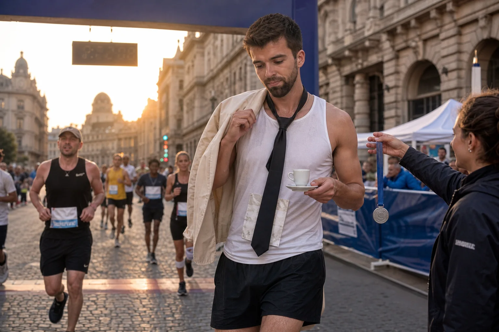

Saltar a los encargos
Oficina ficticia de encargos accidentales

MÓNACO · 2,4 SEGUNDOS MÁS TARDEEl pit stop de la americana gris
Entró en boxes buscando el ascensor del hospitality. Un mecánico le puso una pistola neumática en la mano y Max decidió que preguntar habría hecho perder tiempo al equipo. La rueda quedó colocada; la manga, ligeramente menos italiana.
Comparar con la versión del paddock →

VIENA · COMPÁS NO DETERMINADOEl suplente del suplente
Le pidieron que sujetara la batuta mientras localizaban al director. Max oyó el primer acorde y asumió que aquello era una entrevista de trabajo. La orquesta terminó el movimiento; el concertino todavía busca el momento exacto en que aceptaron seguirle.
Consultar el ensayo no autorizado →

07:03 · KILÓMETRO DESCONOCIDOLa maratón que atravesaba su cafetería
Salió del hotel vestido para una reunión y encontró cortada la ruta más corta hacia el desayuno. Siguió las vallas, atravesó un arco de meta y recibió un espresso antes que la medalla. Afirma que fue estrategia de hidratación italiana.
Antecedentes cafeteros en altitud →